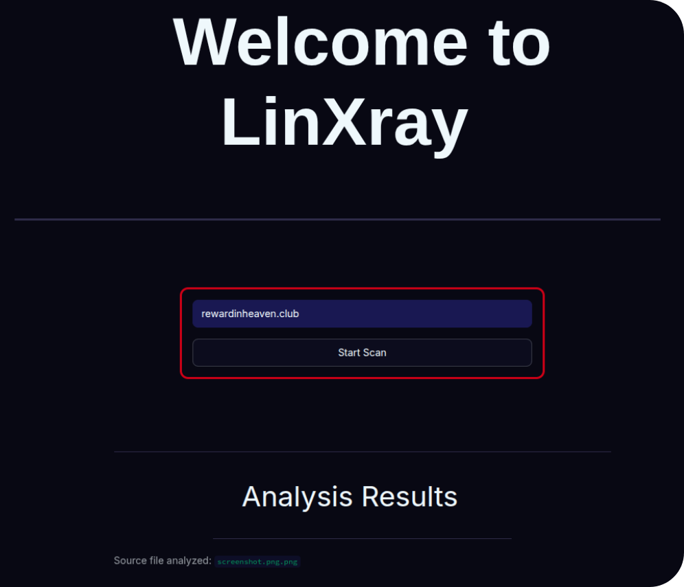

Currently pursuing B.Tech in CSE (Cyber Security) / VIT, VELLORE
Curiousity killed the cat,
Too Bad I'm Human.
A collection of the questions I’m asking, the things I’m making, and the ideas I’m learning to express.
EXPLORE MY WORKHello, I’m Gauresh Nitin Bhatia — a first-year student studying CSE with a specialization in Cyber Security at Vellore Institute of Technology.
I chose this field because I am deeply interested in how technology can protect people—not just systems. In a world where so much of daily life depends on digital platforms, privacy, personal data, and online safety have become fundamental needs. I want to understand how attackers exploit weaknesses and, more importantly, how ethical security practices can prevent that harm. At VIT, I’m building a foundation in SOC (Security Operations Centre) and Quantum Cryptography while learning to ask better questions, work with care, and turn my learnings into something practical.
This portfolio is a snapshot of that process. You’ll find two projects in progress, three courses that shaped how I think, writing samples, and a concise résumé. It’s a record of what I’ve learned so far — and an invitation to see what I might explore next.
A WORK IN PROGRESS
One idea, taking shape.

01 / CURRENT PROJECT
LinXray:
We will think so you can click.
An on-demand link analysis app that helps people understand potential warning signs and ask follow-up questions before opening an unfamiliar link.
READ ABOUT THE PROJECT
02 / CURRENT PROJECT
BeforeULeave:
Your Home's Energy, at a glance.
A sample project exploring how a simple dashboard could help you leave your home without the worrying whether you turned off the Heater.
READ ABOUT THE PROJECT